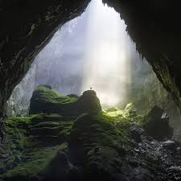
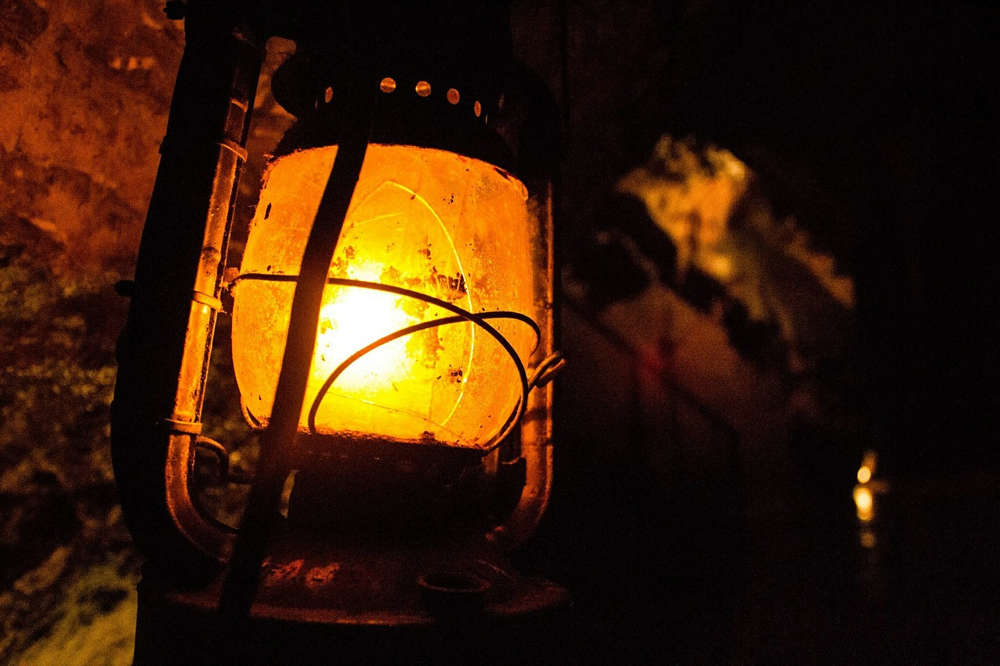
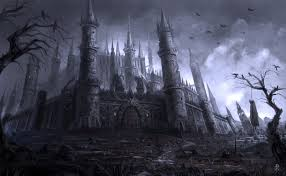
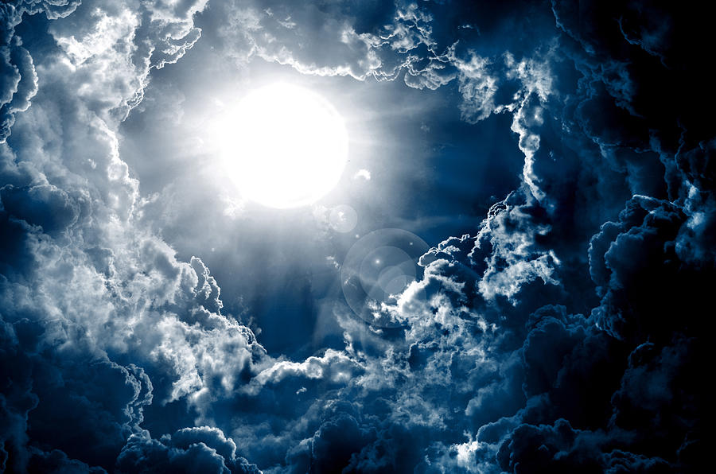

I opened my eyes as I lay in the cushions of grass as my friends ran along the trees of the huge magical lavern infested with flowers. It was a joyous Saturday morning of October, with the chilly air, and the soft wind blowing from the peak of the hill where I sat with my two best friends, Abby and Anna. I’ve known both of them since we were little toddlers, curious of what the world holds, unknowing that today would be one of the biggest adventures of life. I looked over as a small little butterfly flew over through a small dirt trail, giving me the urge to follow it immediately. I gave Anna a slight nudge and she too knew the curiosity we were eager to explore. The both of us got up from the top of the hill where we were watching the clear blue sky, and started going towards the steep, foothill trail.
As we gradually went stumbling multiple times to overcome this leaf-twisted path, Abby yelled out of realization, “Where are you two going?”. “There’s a little trail that might lead somewhere, though it is quite bushy and steep!”. I said looking down at the millions of leaves that danced with the breeze. “Well then come back! You two are going to fall off the hill and I am not responsible for it”. Anna turned back and looked at her with a dull look. Abby has always been the least curious one, always preferring to sit and just relax. We continued on the steep path going further and further into the covering trees full of greenery and blossoms. “Ugh, fine…” Abby got up and followed us as the other kids, Manuel, Annabelle, and Sophia, followed along. We continued until Sophia yelled, “Hey look I found another trail!” pointing to a smaller trail followed with a huge bush of colorful flowers, ranging from orange, white, and purple. “We’re following this trail, though the three of you can see what that trail leads to.” “But don’t go too far.” said Abby sternly. As we departed, me, Abby, and Anna had reached the end of our trail, leading to a beautiful arch of blossoms and leaves and a small pond with petals. As the three of us started climbing up towards the pond, awed and amazed, we heard a great scream not so far in the distance. We immediately remembered about Sophia, Annabelle, and Manuel and ran down the trail back to the other trail. We pushed aside the stick-like branches and ran as fast as we could as we approached a small cavern of branches, leaves, and flowers, with a surprisingly large log in the middle of the area.
As we gradually went stumbling multiple times to overcome this leaf-twisted path, Abby yelled out of realization, “Where are you two going?”. “There’s a little trail that might lead somewhere, though it is quite bushy and steep!”. I said looking down at the millions of leaves that danced with the breeze. “Well then come back! You two are going to fall off the hill and I am not responsible for it”. Anna turned back and looked at her with a dull look. Abby has always been the least curious one, always preferring to sit and just relax. We continued on the steep path going further and further into the covering trees full of greenery and blossoms. “Ugh, fine…” Abby got up and followed us as the other kids, Manuel, Annabelle, and Sophia, followed along. We continued until Sophia yelled, “Hey look I found another trail!” pointing to a smaller trail followed with a huge bush of colorful flowers, ranging from orange, white, and purple. “We’re following this trail, though the three of you can see what that trail leads to.” “But don’t go too far.” said Abby sternly. As we departed, me, Abby, and Anna had reached the end of our trail, leading to a beautiful arch of blossoms and leaves and a small pond with petals. As the three of us started climbing up towards the pond, awed and amazed, we heard a great scream not so far in the distance. We immediately remembered about Sophia, Annabelle, and Manuel and ran down the trail back to the other trail. We pushed aside the stick-like branches and ran as fast as we could as we approached a small cavern of branches, leaves, and flowers, with a surprisingly large log in the middle of the area.
“Annabelle? Manuel? Sophia! Where are they?” asked Anna. I reluctantly went up to the huge log and observed it, finding it very old… “Hey this log is surprisingly old! I mean look at the texture and marks!” I said. “It has to be at least 100 years old…”. We searched the area for a few minutes and found no sign of the younger kids. Being tired, I sat down on the log and looked at Abby and Anna. “Let's sit down for a bit, they are probably fine.” “Easy for you to say! You don’t have any siblings.” said Abby. Anna sat down beside me and accidentally dropped her valuable ring. “Hey! My ring fell under the log! We need to get it. Come on help me…” We started pushing the log aside by using all of our strength when Abby said exhaustedly, “Why do you like that rusty old ring anyways?”. The ring was a big part of Anna’s life, and was passed on for generations in the family. It meant so much to her. When we pushed the log aside we stumbled and fell one by one into a dark, deep hole with a surprisingly strong force pulling us. I felt myself falling at top speed through this pitch-black hole, screaming at the top of my lungs when I became slowly dizzy and blacked out completely.
I woke up with blurry vision, in a dark leaf-stern tunnel when three tiny humans threw water upon my face. I got up and grabbed my shattered glasses nearby and put them on, staring with my eyes bewildered as three tiny, talking, fairies fluttered in front of me. I looked up to see all of my other friends confused. “Oh my dear you look terrible! Let's get you fixed up.” said the small green fairy. She took out her little wand and waved it, as I felt my hair being brushed out and untangled and my face getting cleansed along with my dirty clothes. My glasses were instantly repaired as I began looking around this dark tunnel dimly lit with only 3 candles. “Where are we? And who are you?!” I said terrified. “We are nomix pixies! A breed of fairies basically, I’m Dixie and these are my sisters Alpine and Beatrice.” said the short blue fairy. “You human beings stumbled upon the dark world of Hallolantern ville, and we need to get you guys out before the….vampires..capture you for dinner!” Alpine, the tall yellow fairy, whispered. “The what?” asked Annabelle. “What in the world is HaloLantern town?” “This place is not safe for humans, especially kids like you. Ever seen the great lantern tribe lose the Bloody Revolution, the royal Lantern and Magical creatures families, like us, have been the servants of the currently Ruling Vampires.” said Beatrice sadly. “WOAH! We get to see Vampires?! I thought they were a myth…” said Manuel. “NO!” said Dixie. “If you meet the Vampires, then they will kill you all like they did to the past entrees. They are evil beings….” That explained all the blood and skeletons. “The only way you can get out is by the sacred Pumpkin Key hidden in a secret Chamber at the Vampires castle. It can only be obtained by human creatures to unlock the portal back to the world above us. The key will also bring life back to Halo Lantern town, but only by the bravest humans of all time. “ I looked at all the others and blindly said,”We are going to find that key..”. Everyone looked at each other in awe.
“No way am I going to get eaten by a bunch or blood-thirsty Vampires!” exclaimed Abby awaringly. “Do you want to get back home?” asked Sophia. “Ugh, fine..” said Abby agreeingly. “Brilliant! But you all have exactly 60 minutes to find it otherwise you will be turned into cold stones, so we need to hurry now!” said Alpine hurriedly, getting her wand out like the other fairies. We stared at them as the fairies said in unison,”Human creatures, Fairies of the Night, Turn these kids light and bright!”. A broad range of colors came shooting out of the tiny wands, each a different color, and wrapped around us like a glittering blanket as I felt myself growing smaller and smaller. I opened my eyes and looked down to see myself with tiny, white, fluttering wings, a glittering burgundy dress, and tiny red shoes. We all were turned into fairies. “Is this a disguise?” Anna asked as we fluttered around. “Yes, now we let's head to the castle and hope the gargoyles won’t detect you all, they have spot on smell and can see right through you.” said Dixie as the three fairies lead us out towards a dark, lantern-lit, castle surrounded by black trees and bats flying everywhere. We flew into the castle’s dark black-and-red hallways, looking around everywhere at the crowds of Vampires, it must be Halloween…. The fairies pulled us into a small broom closet and without hesitation said, “Alright, we will split up into three groups with one fairy in each and two kids in the other. I’ll take Abby and Bibha to search near the royal gemstone collection while Dixie can take Anna and Sophia to check the Mysterious Library. Beatrice you take Manuel and Annabelle to check the crowning ceremony thrones.” said Alpine. We split up into groups and flew at top speed, dodging many Vampires in the hallways. Me, Abby, and Beatrice went into a large room filled with different colors of glowing gems stored in small black cages. “Alright look around for any clues, drawers, or locked cabinets.” I searched the corners and desks of the cages and the room. Nothing was to be found until I reached the cage in which lay the blood red gemstone. Underneath the cage was a small piece of orange Parchment which I suspected to be a clue. I called the others over and the note stated “ Fabulae Turpis is my name, though others may not know my mysteries. Find me for Clue 2, to get through the place where books brew. ‘ “The Library!” exclaimed Abby. “That's where all books are, and maybe there is a book called ‘Fabulae Turpis’. No idea what that means but let's go!”. We rushed over to the Library and met up with Anna, Sophia, and Dixie to show them the clue. Dixie gasped. “How are we ever supposed to find that book? It's one of the Oldest Books in the History of Halolantern town!”. “Maybe Dusty books that are old go at the very top shelves of the library. That's what I read in my fairytale books!” said Sophia. So, to give it a try, we all flew around searching for the book, and when we found it in the Restricted area, we opened it to get the very last clue. ‘Our old days are left to be, but we still grow to be carved and seized. Twisted vines and Halloween feasts, find the key under the biggest of us in the orange sea.’ “What could this be?” asked ALpine. “What is carved on Halloween and has vines?” said Anna thoughtfully. Abby exclaimed. “A pumpkin of course!” “Where are we supposed to find a pumpkin here?” I asked. “Well….there is a pumpkin patch, we can try searching there!” said Dixie excitedly. “NO WAY! That place is swarming with bats and gargoyles! They will definitely find the kids there and turn them into the Vampires!” said Alpine. We all flew over and ran into Annabelle and Manuel. “Guys we need to get to the Pumpkin Patch, Now!” said Sophia. “No! We need to save Beatrice! The gargoyles found us and captured her while we managed to escape! They are going to kill her in the head chopping ceremony!” said Manuel. “WHAT?!” screamed the two fairies.”We need to get her right now-”. “Not just yet...HUMANS!” yelled monster-eyed gargoyles. We all screamed as we were put in a sack and taken to a royal throne area swarming with Vampires. The gargoyles tied us together and stuck us onto a wall. The clock was ticking, we had 10 minutes to spare. I looked around and saw a tall dark figure emerge. It was a tall, pale Vampire with black and red robes and an awfully long beard. “Looks like dinner is served everyone! Any last words of our prey?” said the dark figure.
I started to worry. We were all going to die right now and I started to tremble with fear as it felt as if the room grew thinner and darker by second… The tall Vampire brought in a box of my worst fear, sharp Needles. He grabbed a bunch of needles with his long, sharp nails and set them afloat in a strategic pattern facing us all. I started sweating of fear, this was going to be one painful, but brutal death. We had 2 minutes to escape but there was no way that could have been seen. I looked on the other wall as the fairies were all chained in iron cages, preventing them from doing anything or coming out. I hear a creepy voice at the back of my head slowly whispering “Light, Light, we need LIGHT”. I stuttered awake and looked up. The Idea hit me, Vampires were demolished in Light. I had my phone in my pocket as I gradually squigly my tiny hands into my pocket to grab my phone. “ATTACK” yelled the dark Vampire. Everything started to slow down. I had ten seconds to shine that flashlight and demolish everything, to save my friends, to destroy the castle and the Vampires, and to go back home…. The huge needles flew at us as I started trying to press the flashlight button as fast as I could. I couldn't find it...I had 5 seconds. Where is it?!
Five… The room is getting darker
Four… The Needles are growing bigger
Three… Just a little click and it will shine bright
Two… I feel myself growing cold and stern..
One-
I reopen my eyes as my entire body turns dead cold. A bright light shone just before everything blacks out. It was done..I was a statue. A loud trembling was heard and the ceiling collapsed due to the vibrance of the light and the Vampires were vanishing into dust one by one. Suddenly, I regained the warmth and consciousness of my body that had restarted to work. I fell to the floor and took cover as me and everyone of my friends had, protecting ourselves from the collapsing sky. The fairies fluttered quick as the sky and ground were crumbling to pieces. We looked up into the cracks in the sky, revealing a slowly closing portal of light. “That's the portal come one quick!” said Dixie turning us all back into fairies. We flew as fast as we could up into the sky as it slowly closed upon us. “Help!” yelled Anna as she struggled to get her foot unstuck from a heavy tree branch. I flew down as fast as I could and grabbed her hand. Using all my strength and power, we both fluttered up into the sky when everyone else already flew through the portal. The portal of light grew smaller and smaller. It was going to close, we were so close. Anna yanked her leg as hard as she could and I pushed her off into the small remaining beam of the closing portal. “BIBHA!” she screamed as she disappeared into the portal as it closed shut and the dimension froze. I fell to the very depths of the dark cavern forest where I had grown lonely and dark over the years, carving the lifeless pumpkins, and talked endlessly to the cold hearted stones as years passed by. I missed the bright and happy days of adventure and exploring, and I sometimes wondered if they had all ever remembered me out in the world. I turned the dimension into a graveyard where I captured all who had found that mysterious cavern that I had once made a mistake on coming upon. I had turned brutal and dark unlike the joyful kid I had been before, becoming a dark creature, hunting all little boys and girls who seek adventure and curiosity that I had once had.